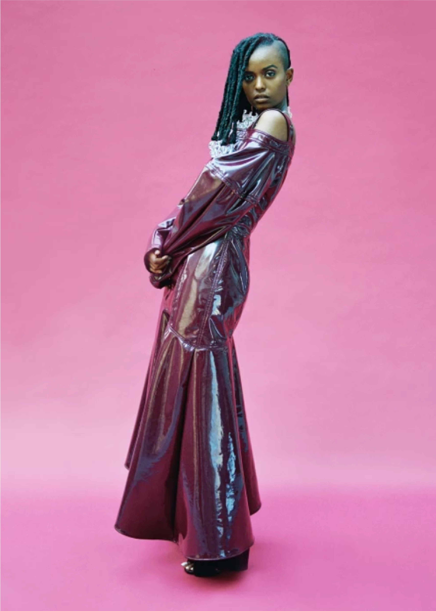
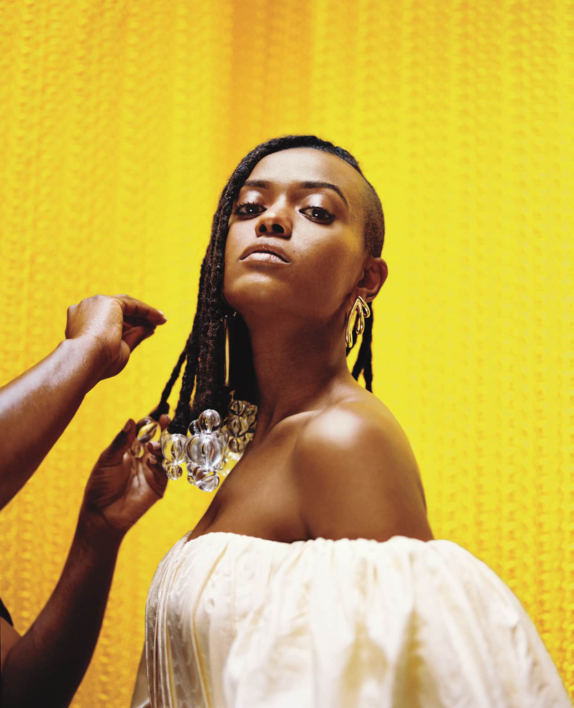
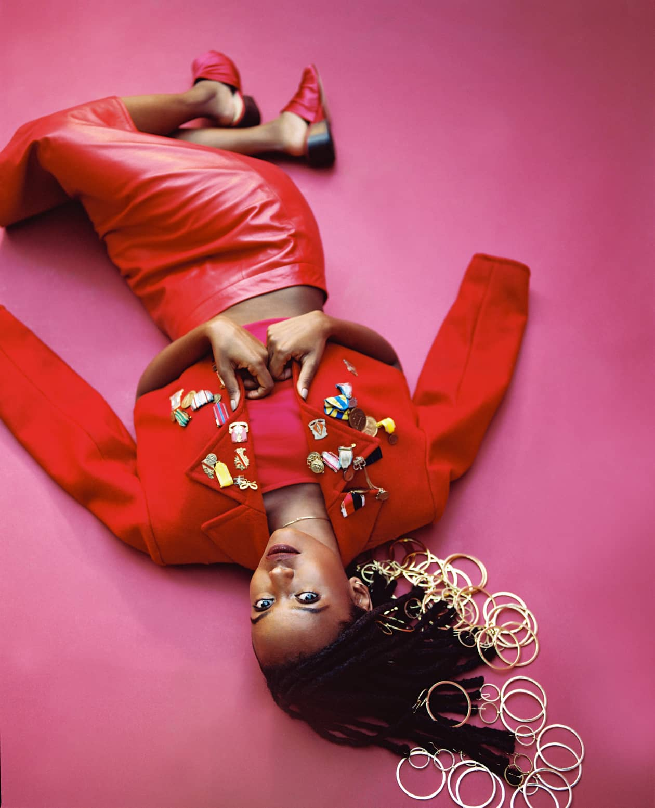
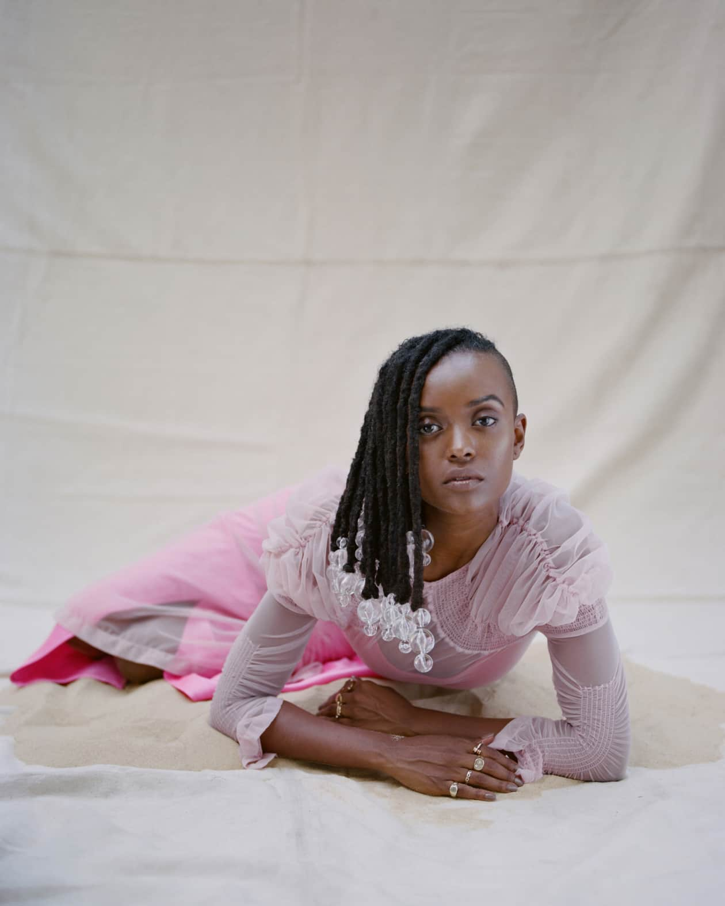

It's rush hour in Midtown Manhattan, but Kelela is safe from the frenzy. She’s nude and lying across from me at the oasis-like Juvenex Spa in Koreatown. We’re sliding around sudsy tables as two women lather every inch of our brown bodies. I start to drift as my legs are lifted, ready to be scrubbed. Suddenly I hear a crash of water. My eyes fly open and I catch a glimpse of Kelela. She’s serene and mermaid-like as the masseuse rinses her off with water from a bucket, glazing her curves — she is sparkling. She looks back at me and sums up the experience with a simple evaluation: “Girl.”
Recently, she’s been feeling “spent,” so instead of conducting our interview during a museum visit, as we’d initially planned, this slightly overcast day in August is devoted to restoration. “Sometimes I’d feel like I hadn’t done that big thing yet in order to deserve doing nice things for myself,” she says as we take a dip in a tub full of floating lemons. But today, she’s taking the time.
On the way to the spa, Kelela had explained why she was so excited about getting a body scrub. “There’s just something about the way that the Korean women handle my body that makes me forget I’m black for a moment,” she told me in the chilly backseat of a rented SUV. “They don’t touch me in a white way. They aren’t so careful with me.”
Kelela’s
Fader cover story
is on newsstands now
Kelela is living between Los Angeles, and London but comes to New York every once in a while. Earlier that morning, at a small table in the Lower East Side’s Russ and Daughter’s Cafe, we share halves of a whitefish and wasabi bagel, a snack that she has to eat every time she visits the city.
The occasion for our chat is her ingenious debut album,
Take Me Apart
, soon to be released on Warp. Kelela is never one to rush — she worked for four years on her first mixtape, 2013’s
Cut 4 Me
, then followed it up with just six more tracks on 2015’s
Hallucinogen
— and her album is the work of someone who, after a period of struggle, has become in-tune with all parts of herself.
Take Me Apart
deepens her relationship with the electronic music world, but it’s fully grounded in R&B’s brave emotional honesty. And now, having risen up through the indie music scene, Kelela is ready to be a pop star.
Kelela Mizanekristos was born in 1983 in Washington, D.C., a June Gemini and a second-generation Ethiopian-American. Her parents had immigrated to the United States independently in the 1970s to attend college on full scholarships, under an affirmative action initiative that funded the education of African students. “My parents met through a radical student movement that was interested in reform. They were about social justice,” Kelela says. As their only child, she inherited this passion for change and spent much of her youth trying to process her place in society. “How did white people take over the world? I could not get off of this question. It consumed me.”

“White people don’t understand that the reason black people are so good is not always that we’re necessarily more artistically inclined, it’s more because we don’t have the space to suck.”
Her parents lived in the same apartment building in Gaithersburg, Maryland, a major suburb more than an hour outside of D.C., but on different floors. It was at her mom’s place that she would sift through soul and jazz records: artists like Miriam Makeba, Sarah Vaughan, Bobby Womack, and Janet Jackson. And at her dad’s, she fell in love with Tracy Chapman’s definitive self-titled debut album at the tender age of 5. Kelela took up the violin and sang in her school’s choir. Later in life, she realized that she inherited her voice from her mom, who always led songs at weddings and family gatherings.
In 8th grade, Kelela nailed a voice, violin, and dance audition for D.C.’s prestigious Duke Ellington School of the Arts. She was elated at the thought of thriving with other talented black youth, but her family couldn’t afford the out-of-district tuition. She was crushed and demotivated. The angst she felt from “missing the boat” at Duke Ellington was something that would trickle over into her 20s — for years, she thought it was too late to become a star.
As the daughter of Ethiopian parents, an American, and a black girl who had friends of many races, Kelela always felt like she was in the middle of many worlds. She communicated her resistance to being boxed into a singular narrative through her style. She’d match trendy “urban” denim brands like Parasuco jeans with a pair of skater-friendly Vans to make it tricky for her classmates to pinpoint where she was situated, she says: “I’d rather be the bridge.” During this developmental time, Kelela got into electronic music thanks to random Napster downloads. “I was thinking of myself as a part of it,” she remembers, “non-verbally agreeing with myself that one day I would be inside of that world.”
In 2002, when she was 19, her boyfriend introduced her to experimental jazz and encouraged her to pursue a singing career. Kelela knew she wanted to be an artist, but first wanted to study the structures that fatigued her. “Every time I experience racism and sexism, the intersection of both, or misogynoir, it’s almost like I go back to the drawing board. Why am I still so busted up by this shit?” she says. “I feel so crushed and hurt every time.” But a brief stint as a sociology student at American University’s School for International Service proved stifling, and she returned once again to music.
Determined to stretch her voice, Kelela taught herself to sing songs in Arabic and Urdu. In 2007, she challenged herself to perform jazz standards during open mics at local D.C. spot Cafe Nema, but she had a hard time unearthing new ideas under jazz’s rigid criterion for perfection. There wasn’t much room to explore the space she always returned to: the in-between. By the time she was 25, in 2008, she still hadn’t written a song of her own.
A Little Dragon concert in D.C. provided some fortuitous direction. After the show, she met the band’s lead singer Yukimi Nagano, one of her vocal idols, who gave her some painfully simple advice on how to start: “Be with people you like. And just jam out.”
That helped — but Kelela still needed more of a push, and, on the recommendation of a friend, she enrolled in a transformative workshop in 2009. A mix of stimulating lectures, mental exercises, and debriefings, it left a big impression. “It taught me that if you want something to happen, it’s not by chance,” she says. “The greater the risks and the more uncomfortable you feel, the greater the outcome and the potential gain.”
Ultimately, that fearlessness is what would allow Kelela to sing with authority and sincerity about love and sex. Along the way, she took a detour to D.C.’s punk neighborhood, Mt. Pleasant, where she experimented with sounds at the house of a friend who played guitar. Being around punk culture, Kelela felt the leeway to mess up, but the very white, very male scene wasn’t necessarily the most comfortable of zones, even as she began to earn praise.
“Kelela! You’re so incredible,” she says in a gnarly tone, mocking the voices that would cheer her as she played in the punk house, before bursting into laughter and baring a mouth full of gleaming teeth. “White people don’t understand that the reason [black people] are so good is not always that we’re necessarily more artistically inclined, it’s more because we don’t have the space to suck,” she explains. “The urgency in which you have to nail the thing is so high because it’s your ticket out, to get in, or to go somewhere.”
That February, with a soulful, electro-poppy love tune called “Laser Night,” Kelela wrote her first song.
“When you demand somebody take you apart,
then you’re the boss.”
This isn’t the first time Kelela’s been ridden with this agony; she felt it a week ago while visiting Berlin. A doctor in London told her that it’s common for singers to have this issue because of the constant pressure on their diaphragms: an exhausted core overworks the back. As we drive to the acupuncturist, it’s clear that she can barely move, but there’s still work to do. The graphics for her newly announced headlining tour have arrived by email and need to be approved; Kelela has the final say. She doesn’t like the version she’s been sent so she carefully leans forward to return her edits on her phone. A little while later, the image comes back fixed to her satisfaction.
The acupuncture appointment is not as successful, and back at the hotel her anguish returns. “I don’t feel like myself,” she says, hunched over in a red chair, allowing herself a sulk. But the moment passes and, determined to continue our interview, Kelela takes a few drops of an herbal elixir to ease muscle tension. She moves aside a cheetah print heel in her suitcase to find a Thermacare wrap, pulls it around her lower back, and we head outside so she can curb the throbbing by smoking a spliff.
On the way, we pick up her favorite drink, a chai latte with almond milk, from a café nearby, then post up in an inconspicuous nook of a one-way street around the block. Cloaked in an oversized hoodie, Kelela barely lights the tip of the joint before she takes a gentle toke.
Leaning against a brick wall, she tells me how she took the same approach to the album art for Take Me Apart. In one of the photos, Kelela is pictured on all fours with her back arched like a sugary crescent as the golden stripes of stretch marks that agonized her while growing up shoot around hip and waist. “Right when I decided to take the photograph I’m like, Why did I do this? Why did I ever sign up to do this whole fucking thing?” she cringes. “But I know that the juicy part — the healing bit, the part that’s going to give me growth — comes from this thing that’s so hard. So I always go there.”
Before Kelela and I met for this story, The FADER had asked her to describe her idea of paradise. She’d replied that laughing and lamenting with her circle of friends temporarily soothes the suffering, but she wouldn’t call it a paradise: “That would imply that all the problems are gone.”


In the years between 2009 and 2011, the boundaries between indie and mainstream became blurry. “There was a departure where mainstream black shit got embraced by white indie bros and almost usurped,” Kelela says. “But what happened to black people’s contributions in that blurriness? I’m a black girl who has dreads and is making R&B music, which is just not a sensational and fashionable music except for when it’s sung by white people.”
Musicians today often supplement their incomes by appearing in fashion campaigns, but Kelela has found that industry just as frustrating to navigate. While she’s stunning and model-like, it’s often hard to find a fit with brands. When thinking about whether or not she is a candidate for an opportunity, she assesses the data that informs her eligibility. “Either I’m not included or I’m included in a way that is servicing that institution,” she explains. “I become the exception. You can capitalize off my brown skin, and, once you put me on, you are making a political statement.”
Other times, Kelela is completely counted out because the brand wants to use blackness, but not her particular skin tone. This leaves Kelela disoriented in a world where she is not a viable option.
At one point, she almost signed to a major music label but decided against it because it required a 360 deal. Now, after going through several changes in management, she’s finally found a home under her best friend Solange’s Saint Heron Management company. They’re building institutions independently in this way that Kelela is interested in: the creation of safe and fruitful space in the industry for women of color.
“There’s a way that white men were still able to hold all the power through the industry’s transformations,” she explains. “They still sit in those chairs. So when it comes to creating the ‘thing’ and promoting yourself in a mainstream way, you need to garner their support.” And as a black woman, it’s challenging to break through without taking what could be perceived as an uber-aggressive approach. That’s why Kelela’s celebration and command of sensitivity and rawness in her music is both fortifying and revolutionary.
“If you want something to happen, it’s not by chance. The greater the risks and the more uncomfortable you feel, the greater the outcome and the potential gain.”
